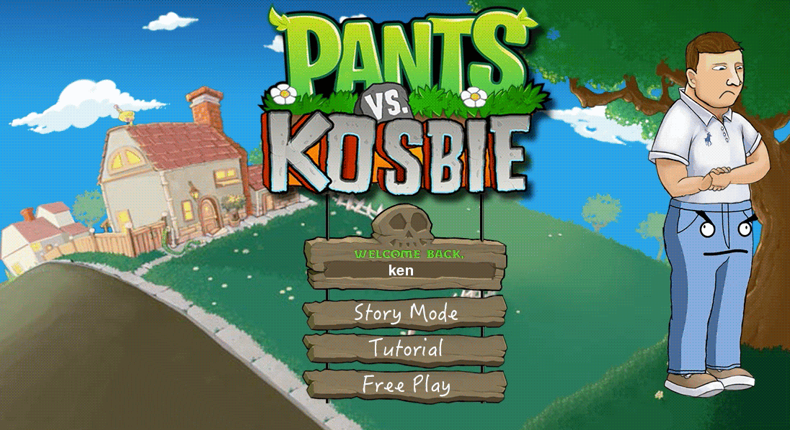
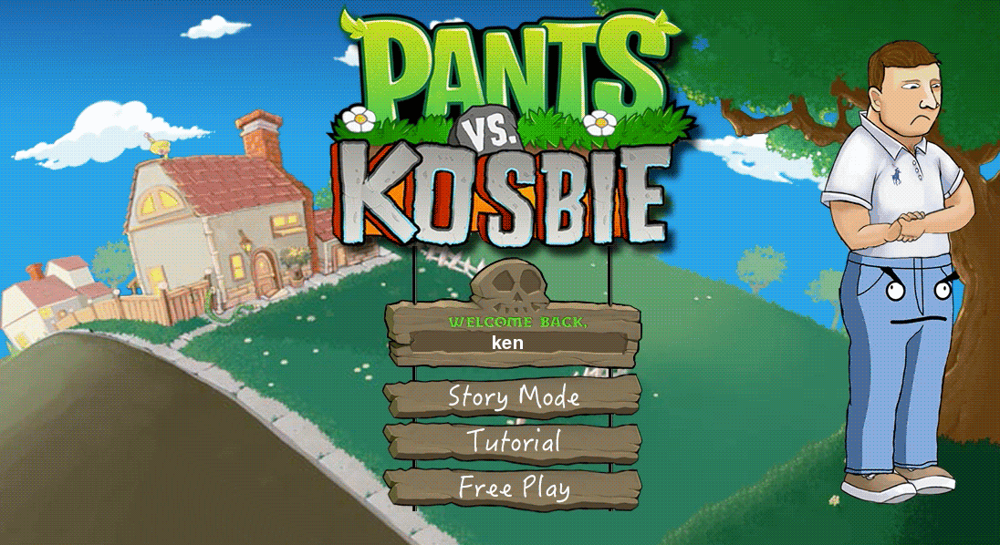

Description
I developed Pants vs. Kosbie as the final project for the most infamous course at Carnegie Mellon University, 15-112 Fundamentals of Computer Science. Taught by the hard-nosed David Kosbie, 15-112 is considered one of the best computer science courses in the United States. Most veterans of 15-112 look back as survivors of the immense workload, the uncompromising difficulty, and the corny jokes of Professor Kosbie. At the end of the course, each student has a three week period to develop a project of their liking to compete in the massive final project showcase. With over 500 bright minds fighting for the number one spot, the battle for first place is fierce; but I managed to snag the victory.
1st place?
From a technical standpoint, Pants vs. Kosbie was far off from the most advanced project. One student created an application that augmented in real time glasses onto a user's face. Another student built a program that allowed users to draw in 3D space with only a webcam and a colored pencil. Those two students went above and beyond by using technologies not covered on the syllabus, winning second and third place respectively. So how did I beat out those two exceptional projects?
The Hurdles
The idea of Pants vs. Kosbie came to me as I was researching the final project showcase. Asking around, I learned that there were two significant hurdles obstructing victory. The first was my T.A. The way the showcase is set up is that each project gets 3-4 minutes of stage time before the next presentation goes. However, because there are about 500 students, not everyone will have the opportunity to present their project. Instead, each T.A. nominates one project out of their assigned students. Getting this nomination was the first hurdle.
The second hurdle was my classmates. All of them. Collectively. That's because the winners were not chosen by the instructors, but rather through an in-house vote by the showcase audience. With attendance made mandatory for students, that meant I had to impress a crowd full of my competitors to earn their votes.
Tackling the Hurdles
With those two hurdles in mind, I came up with Pants vs. Kosbie. By adapting the popular strategy game Plants vs. Zombies, I relied on the Mere-Exposure Effect, which describes the psychological phenomenon where people prefer things which are familiar to them. With 15-112 T.A.'s being a technology-savvy group, there was a very high chance that they were well acquainted with the original Plants vs. Zombies, giving my parody an initial advantage over original ideas. However, many students also made clones of popular games, meaning I still had a lot of work to do if I wanted my T.A.'s nomination.
In consideration of the time constraint, I made special care to deliver a clean and finished product. A common mistake students make is not leaving time to visually refine their projects after spending hours and hours tackling the back-end. In a showcase like this, a beautiful, simple product will leave a better impression than one that is complicated and unpolished.
While others were mostly behind a text editor writing code, I dedicated hours maintaining an experience that felt consistently refined. That meant every button on every menu were styled and responsive, and every sound bite and every typeface carefully selected. A blatantly rough element distracts the user from the gameplay and brings attention to the flaw. The objective was to make my T.A. feel so immersed that he forgot he was playing just another student project.
The Secret weapon
In addition to the actual project, part of the required deliverables is a video. The video gives students the chance to demonstrate their work, ultimately memorializing the project in a gallery to inspire future students. What was particularly special about the video was that it also serves as an alternative for the showcase live presentation. This option proved to be a golden opportunity for me to win over my classmates' votes.
Playing my video at the showcase instead of live presenting was advantageous for several reasons:
Finale
With the first and second hurdle tackled, Pants vs. Kosbie was nominated by my T.A., then went on to receive the majority vote at the showcase. The rest is history.